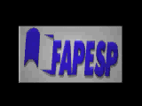

| Células Virtuais Versão 1.5 | |
| Desenvolvido pelo o CBME (CEPID-FAPESP) em parceria com o Departamento de Bioquímica Médica, ICB, UFRJ Educação Continuada para Professores do Ensino Médio: Tecnologias Educacionais (CNPq: 550847/2001-4) |
|
|  |
Autores: Leila Maria Beltramini Ana Paula Ulian de Araújo Luciano Douglas dos Santos Abel (Voz) Oscar Henrique Pereira Ramos (Versão original) Hiroshi Sebin Sampaio (Versão HTML/JavaScript) |
|
CBME (Centro de Biotecnologia Biomolecular Estrutural)
Endereço na internet: http://cbme.if.sc.usp.br e-mail: cbme@if.sc.br |
|